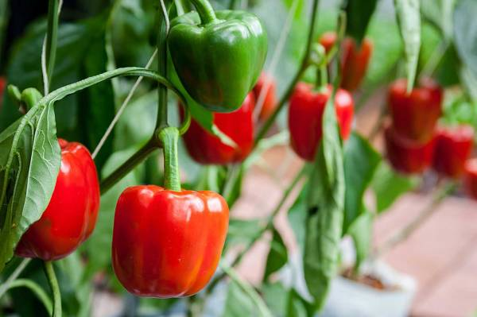
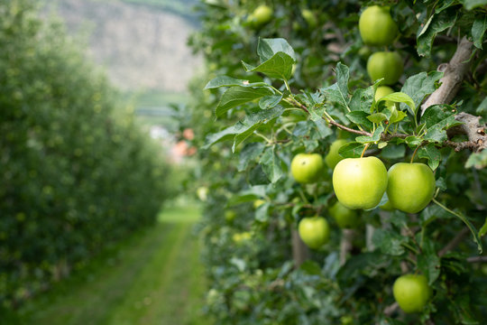
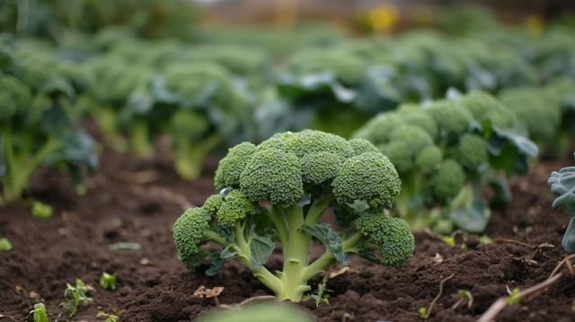
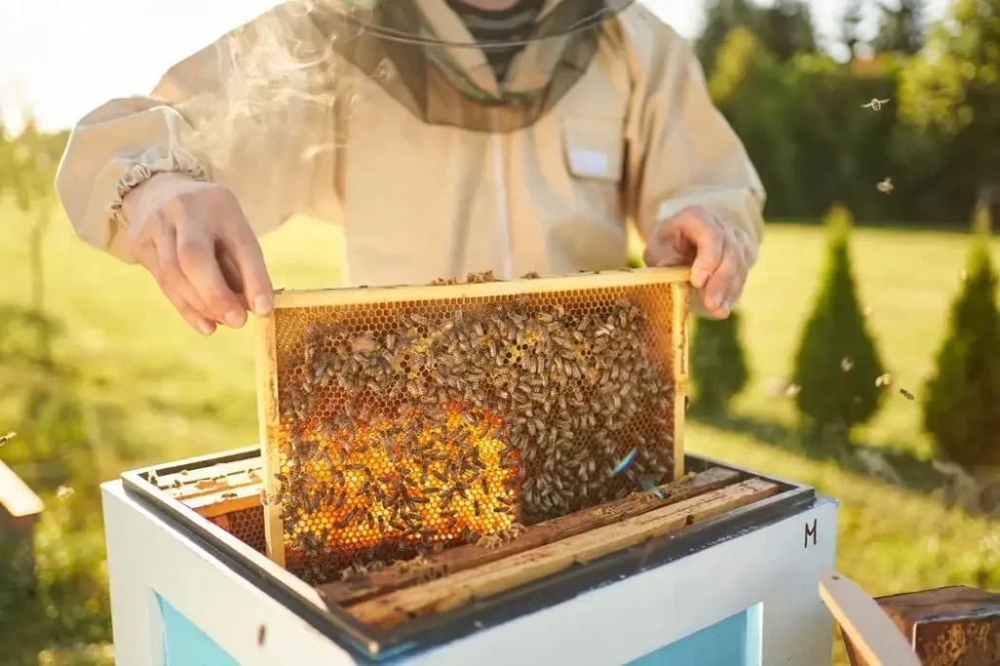

Organic farming is the most efficient method of farming because it uses biological fertilizers and pest control methods from plant waste. It maintains the health of the health of the environment by reducing pollution and giving immense nutrition to the plant. The main practices include crop rotation,compost, manure, and collecting plant waste. These biodegradable elements also help in the sustainable development of the farming culture, and organic farming is where we can make simple tasks effectively work. for complex environmental issues. The farmers of ancient India are known to have evolved nature-friendly farming systems and practices such as mixed farming, mixed cropping, and crop rotation. The first “scientific” approach to organic farming can be traced back to the Vedas of the “Later Vedic Period," from 1000 BC to 600 BC. But, as we have to know from the more recent scientific studies, the concepts of organic agriculture were developed in the early 1900s by Sir Albert Howard. F.H. King, Rudolf Steiner, and others who believed that the use of animal manures (often made into compost), cover crops, crop rotation, and biologically based pest controls resulted in a better farming system.
Bell peppers are the vegetables that grow mostly on the European continents mostly.With all the invasions that India experienced, there were many changes that we went through. Food is something that has mostly evolved over the years. And there isn't any doubt that, till now, we have seen many changes in our food and nutrition. Ultimately, farming techniques evolve with every introduction of new food items. One of the vegetables that has been included in our food variety is capsicum or bell peppers. It was introduced into India in two ways: first, by the Portuguese in South India, and second, by Arabian traders in North India. They have been grown in Mexico since 2500 BC. Reportedly, Christopher Columbus brought the plant to Europe, and it spread to many parts of the world, including India. The genus name Capsicum comes from the Greek word Kapto, which means "to bite." Most species of this plant contain capsaicin.Bell peppers are rich in many vitamins and antioxidants, especially vitamin C and various carotenoids. For this reason, they may have several health benefits, such as improved eye health and a reduced risk of several chronic diseases. All in all, bell peppers are an excellent addition to a healthy diet.
Apples are something we, as Indians, endure most. Green apples were first cultivated by an Australian woman named Maria Smith; hence, they are also known as Granny Smith apples. This fruit appears light green with tart, juicy, and crisp flavors and a hard skin with a long shelf life as compared with other apple types. The green apple is a hybrid fruit. It is developed by combining two different species of apple, namely, Malus slyvesterus and Malus domesticus. It contains bioactive compounds and flavonoids in a very good amount as compared to other varieties of apples. Green apples grow best in warmer climates such as Australia and South Africa, as well as in Spain, southern France, Italy, and Washington State. In South Africa, apples are grown primarily in the Elgin Valley in the Western Cape, as well as in the Kanzi area. As we know, these green apples are lower in calories and carbs. Green also has 63% more protein, slightly more fiber, and more potassium and iron. Red is higher in beta-carotene and antioxidants. The only major difference in nutrition is that green apples have almost twice as much vitamin A as red apples. Green apples are grown in various states across India, including Himachal Pradesh, Jammu and Kashmir, Uttarakhand, and parts of Punjab. These regions have suitable climates and soil conditions. Himachal Pradesh is known as the apple state of India, accounting for almost 20 percent of the global apple production.
Broccoli is the most nutritious diet option for many of the Healthoholics.Native to the eastern Mediterranean and Asia Minor, sprouting broccoli was cultivated in Italy in ancient Roman times and was introduced to England and America in the 1700s. Broccoli is an edible green plant in the cabbage family whose large flowering head, stalk, and small associated leaves are eaten as a vegetable. Broccoli is classified in the Italica cultivar group of the species Brassica oleracea. Broccoli is a good calcium source, essential for maintaining strong bones and preventing osteoporosis. It also contains vitamin K, which is essential for bone health. Broccoli is low in calories but high in fiber, making it a filling food that can help control weight and promote a healthy metabolism. The super easy recipes from many sources made it an even more effective and easy option to endeavor nutrition. India does have its own farms to produce broccoli, such as in Tamil Nadu. It is the most popular state for growing broccoli in India. The famous districts in Tamil Nadu for commercially producing broccoli are Coimbatore, Madurai, and Salem. Gujarat is known as a significant contributor to the nation's overall broccoli production. The ideal temperature for cultivating broccoli is around 30 degrees Celsius, making it a viable option for farmers in Devanahalli Taluk, Karnataka. Local farmers have shown increased interest in cultivating this crop due to its lucrative returns. Regular consumption of broccoli can support overall health and contribute to a balanced diet. This green vegetable is considered a powerhouse of protein. However, eating broccoli is beneficial only if you cook it properly and then consume it. Broccoli can be eaten in many ways, like steaming, stir-frying, roasting, etc.
The keeping of bees by humans, primarily for honey production, began around 10,000 years ago.Johann Dzierzon is considered the father of modern apiology and apiculture. Most modern beehives derive from his design. It is subsistence-level and uses traditional hives like clay pots, empty wooden boxes, and woven bamboo baskets. Bees are collected from natural sources, and the boxes are kept in fields or on the sides of houses. Modern beekeeping: Here, bees are kept in man-made hives and reared for commercial honey production. This type of honey-making is widely spreading across the world for many reasons. While bees create honey, they also create propolis (bee-made resin that helps in honeycomb maintenance), pollen (the reproductive powder of plants), and royal jelly (food for the larvae). Apiculture is important because it provides bees with a safe place to work and live. Is it eco frienly?This could be the question that concerns us when we hear about api culture. Beekeeping extends far beyond the mere collection of honey; it plays a pivotal role in nurturing an environmentally sustainable ecosystem. Emphasizing ethical sourcing, sealed comb honey, and the diversification of honey types, the beekeeping industry is undergoing a transformation that not only benefits the bees but also contributes to a healthier planet. The potential for increased per capita consumption of honey, driven by innovative uses such as mead, showcases the industry's potential for growth and prosperity. Beyond its role in satisfying our taste buds, beekeeping promotes the adoption of eco-friendly agricultural practices, diminishing the reliance on harmful pesticides while enhancing crop pollination. The Indian apiculture market size reached INR 25,760.9 million in 2023. Looking forward, IMARC Group expects the market to reach INR 63,474.6 million by 2032, exhibiting a growth rate (CAGR) of 10.2% during 2024-2032. Modern beekeeping in India has seen the introduction of movable frame hives. These hives allow beekeepers to inspect and manage bee colonies more efficiently. The frames can be removed, enabling beekeepers to extract honey with minimal disruption to the bees.